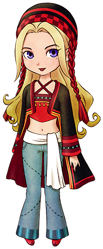

珍妮弗

因为喜欢矿石镇的自然环境而在湖边搭了个帐篷。
似乎能从人和自然感受到能量。
简略说明
- 登场：最初
- 住所：帐篷
- 性别：女
- 生日：冬2（冬18）
- 家庭成员：无
喜欢与讨厌的物品
- 最喜欢：栗子饭、烤栗子、法式栗子蛋糕
- 很喜欢：巧克力、红薯、曲奇、巧克力曲奇、布丁、马德琳
- 喜欢：芜菁、蜂蜜、油、烤玉米
- 普通：温泉蛋、苹果、蓝草、御好烧
- 讨厌：奶酪S、奶酪蛋糕、小鱼
- 很讨厌：毒蘑菇、石头、空罐、长靴、鱼骨
喜欢栗子做的食品和甜品
珍妮弗最喜欢用「栗子」做的食品。栗子能在秋天的圣母山脉的山腰捡到。
不容易获得「栗子」的时候，可以送一些像「巧克力」和「曲奇」的甜点。
她对全部的矿石都不喜欢，所以即便是很贵的东西也不要送给她。
到了秋天时，去后山捡「栗子」吧！
居民事件
珍妮弗的礼物
恋爱事件
 相遇 好感度0以上
相遇 好感度0以上
- 星期：1～6
- 天气：晴
- 时间：AM10:00～AM12:00
- 地点：后山
- 其他条件：-
- 结果：
你在说什么啊… → -2000
嗯，很舒服的样子 → +3000
朋友1 好感度5000以上
- 星期：2～6
- 天气：晴
- 时间：AM10:00～AM12:00
- 地点：后山
- 其他条件：和巴基尔不是初次见面
- 结果：
想法因人而异 → -2000
很美的解释啊 → +3000
 朋友2 好感度10000以上
朋友2 好感度10000以上
- 星期：1～6
- 天气：晴
- 时间：AM10:00～AM12:00
- 地点：后山
- 其他条件：-
- 结果：
像天使似的名字 → +3000
像魔法一样的名字 → 无变化
总感觉好高贵的名字 → -2000
 朋友3 好感度20000以上
朋友3 好感度20000以上
- 星期：1～6
- 天气：-
- 时间：AM11:00～PM4:000
- 地点：养鸡场1楼
- 其他条件：拥有大背包或整理架 背包里有空位
- 结果：
原来你不是天然呆啊 → -2000（莉莉雅友好度-10）
好温柔啊 → +3000（莉莉雅友好度+20）
 告白 好感度30000以上
告白 好感度30000以上 恋人/挚友1 好感度40000以上
恋人/挚友1 好感度40000以上
- 星期：-
- 天气：晴
- 时间：AM10:00～PM4:000
- 地点：后山/帐篷
- 其他条件：-
- 结果：
你父母一定在担心你啊 → -2000
自己的幸福是最重要的 → +3000
 恋人/挚友2 好感度50000以上
恋人/挚友2 好感度50000以上
- 星期：-
- 天气：-
- 时间：PM7:00～PM9:00
- 地点：旅馆2楼
- 其他条件：-
- 结果：
这很难说啊… → -2000
我会尽量不让你担心的 → +3000
 求婚 好感度60000以上
求婚 好感度60000以上结婚
- 求婚成功的一周后。
- 结果：参加仪式的居民友好度+20
称呼
- 和对象结婚以后。
- 结果：对方会以自己选择的称呼来叫自己。